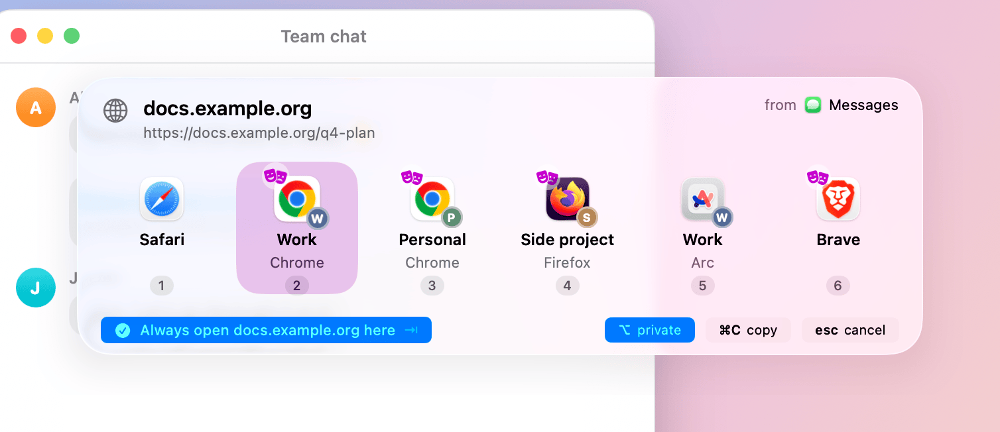
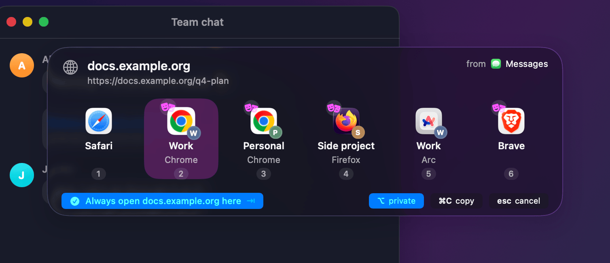
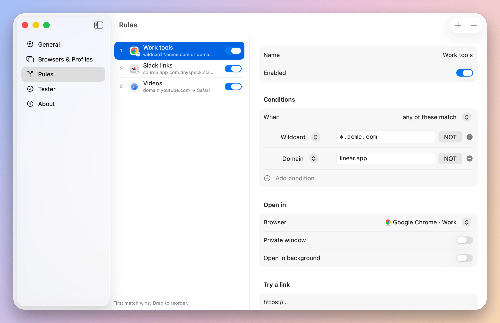
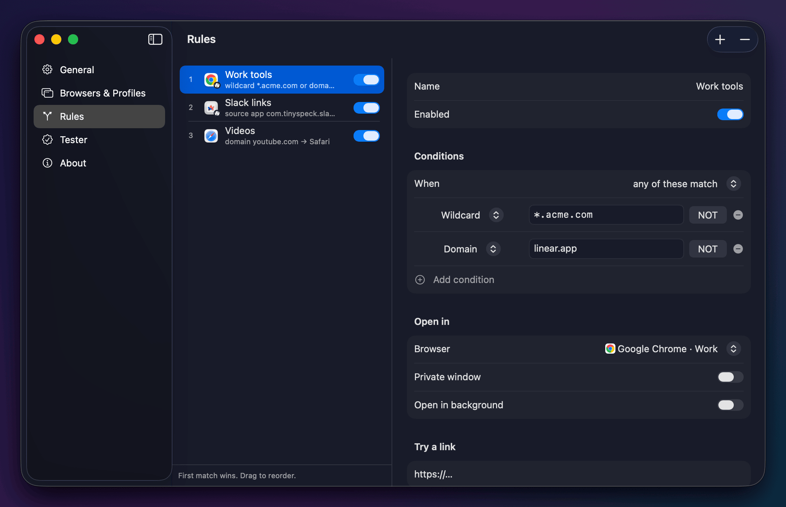
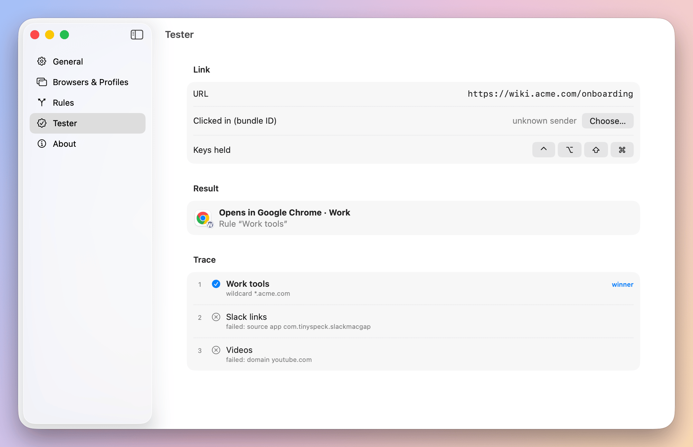
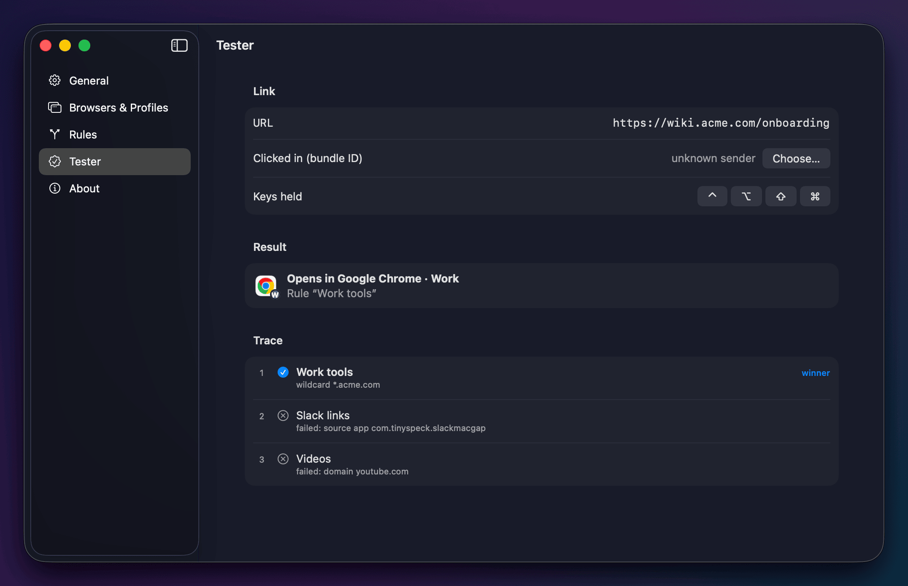

BrowserBro
For years my work links opened in my personal browser. So I made a small Mac app that sends each link to the right browser and profile.
Free · MIT · macOS 14 or later · Apple silicon and Intel
How it works
-
1
Click a link
No rule yet? The picker opens at your pointer. Press a number.


-
2
Add a rule
*.acme.com → Chrome · Work. Or tick a preset pack: Work tools, Meetings, Media. Next time the link just opens there.


-
3
Check it
Paste a link in the Tester. It shows which rule wins and why.


- 1–9 open
- ⌥ private
- Tab always here
- ⌘C copy
- Esc cancel
Install
Free. macOS 14 Sonoma or later · Apple silicon and Intel (Liquid Glass look on macOS 26).
BrowserBro.dmg · Prefer a ZIP? BrowserBro.zip · Release notes
brew install --cask sergchil/tap/browserbrocurl -fsSL https://raw.githubusercontent.com/sergchil/browserbro/main/scripts/install.sh | bashDownloaded the app? The first open takes 3 steps.
Drag BrowserBro to your Applications folder. Then:
- 1
Open BrowserBro. macOS says it cannot verify the app. Click Done (OK on macOS 14), not “Move to Trash”.
- 2
Open System Settings → Privacy & Security. Scroll to Security and click Open Anyway.
- 3
Enter your Mac password, then click Open. macOS remembers your choice.
Then open BrowserBro Settings and click Set as Default Browser…
FAQ
Why does macOS warn me the first time?
The app is not notarized by Apple (that costs $99 a year). Homebrew and the Terminal line skip the warning. The code is open: read it, or build it yourself.
Does it send my links anywhere?
No. No network calls, no accounts, no analytics. Everything stays on your Mac.
Which browsers work with profiles?
Chrome, Brave, Edge, Vivaldi, Firefox, Zen, LibreWolf and Arc (through Spaces). Safari works as a browser.
Where are my rules?
In a plain file you can read and back up: ~/Library/Application Support/BrowserBro/rules.json.
Which Macs does it run on?
macOS 14 Sonoma or later, on Apple silicon and Intel. On macOS 26 the picker uses Liquid Glass. On macOS 14 and 15 it uses the classic translucent look, with the same layout and keys.